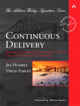

Camps
Better web development environments
Jon Jensen
End Point Corporation
YAPC::Europe 2011, Rīga, Latvia
17 August 2011
Some context
- Web development focus
- ... on Unix-like platforms
- Solve or reduce some universal problems
- Small, medium, and large projects
- ... and small projects often grow larger
- An internal project released as open source
- I work primarily with web applications in ecommerce, but many of the lessons I’ll talk about apply to software development in general, not just web development.
- I’m focusing on camps, which is a particular development system we created at End Point, but many lessons can be applied piecewise in any development environment.
- The only true small-scale development is a single developer, working on a single project, that starts and stays small, and progresses fairly linearly. Anything more than this — two developers, one developer with a few simultaneous projects on the same codebase, a project that becomes important to its users, a project that grows beyond a weekend hack — needs the same infrastructure as any large-scale project. But usually doesn’t get it.
- Camps are a good example of a common open source works: solving a real problem, finding that the solution applies in another place, then another, then generalizing it and releasing it for others to use. Camps are used extensively by End Point and our clients, and are fairly mature, but the camps open source project is still young.
Different makes a difference
|
“Different makes a difference” comes from the book Practices of an Agile Developer, item #21.
Antipattern: Production only
- Set up new server or hosting account
- Write code
- Step on other developers’ toes
- Deal with version control “later”
- Go live
- Now need somewhere to do development, but no time
- Hack directly in production
- Suffer
Developers need a place to work. The easiest place to do this is by editing code on the production site. When you’re working on a new site, there is no production site yet, so what you’re working in is clearly the development environment. When it’s time for that to go live, everyone’s in a hurry, things are all set up, so you switch it live. From this moment on, where do you develop? It’s of course very dangerous to keep developing right there, but it solves the immediate problems, everyone’s busy, and you make comrpomises.
Frameworks that build in support for development and testing, such as Ruby on Rails, are a huge step forward and greatly reduce this problem if their conventions are followed, but they also introduce some new problems of their own which I’ll cover in a few minutes.
Yes, that still happens
It’s not as common as it once was.
Modern web development frameworks provide some good conventions and defaults.
Even so, there are still problems.
Antipattern: 1 staging environment
- Application code in version control
- Developers work on their own machines
- Single staging environment
- No https
Single staging consequences
- Tedious local setup by each developer
Every developer has tedious local setup to do before beginning any work, perhaps not too extensive if they’re all using the exact same OS, versions, etc., but that’s rare. Often it means several hours’ worth of setup, documenting custom steps, etc. This makes it harder to bring in new developers when needed, for them to change machines, and so on.
Single staging consequences
- Trouble from OS, language, libraries, and database differences
Are you using the same architecture (32- vs. 64-bit), operating system, libraries, web server, database, as the production system and as the other developers? It’s a huge time-sink to deal with differences between Ubuntu, RHEL, Debian, Fedora, and Mac OS X, development web server vs. Apache, database release differences (Postgres 8.3 vs. 9.0, or MySQL 4.1 vs. 5.0, etc.), different versions of libraries such as ImageMagick, language libraries, etc.
Each developer will likely have differences from each other and from staging & production.
Single staging consequences
- Development databases are mostly empty
- Staging and production databases grow apart
If you’re not using a recent near-identical copy of your production database, you’re developing against a toy.
A nearly-empty development database is nearly useless for testing things such as UI behavior with large lists, paging systems, searching, query performance, memory consuption, etc. As staging and production databases grow apart, the same problems affect staging.
Single staging consequences
- Development stack has toy web server
- No https
- Web server rewrite rule changes are an afterthought, made manually in staging
A different web server may serve different MIME types, handles uploads differently, different access control, deflate or gzip compression, redirects and rewrites, etc. Differences are often glossed over and people say “it’ll work in production”.
Web server configuration changes are as much as part of the application code as anything else, yet they’re often treated as an afterthought, unversioned and separate from app code, with no way to experiment in development.
Problems transitioning between http and https are found only in staging or production because nobody uses “unnecessary” https in development. It’s not about security -- it’s about keeping the environment the same.
You probably have some Apache redirects, rewrites, and subdomains set up, and they’re not reflected in the development webservert. You could set up Apache locally and do all this, but did you?
Enough antipatterns
Most web developers can probably name a dozen more.
Camps to the rescue
- Deal with complex sites.
- Keep as much the same as possible between development, staging, and production.
- Automate everything, make it easy.
- Keep technical debt to a minimum.
Most simple sites don’t stay simple. If they’re at all successful, there are more projects, more people, more time pressures. It’s better to plan for success.
Camps require some initial investment, force some discipline, and require a little occasional maintenance. The value comes out when you’re dealing with a system that actually matters. And the payoff usually comes in saved time and sanity, more quickly than you’d expect.
What are camps?
Camps: A system and set of conventions to easily manage parallel server-based development and staging environments, and keep them synchronized with the production environment.
Camps leverage popular open source tools and build upon them, for example, Git and Subversion.
Camps don’t normally use virtualization, just classic Unix user separation.
Demo

- Show the camp-index.
- Note camp0, camp1 staging conventions.
- ssh to the server as user jon.
- Create a new simple camp.
- Scroll back in screen to review what mkcamp did.
- Reload camp-index to show the new camp in the list.
- ls -lFa camp$x and look at httpd, pgsql, htdocs.
- Show in “ps uxww” the different services per camp.
- netstat -nl | grep $camp_number
- In a Postgres camp, run psql_camp, “show port”, see that it’s a separate database cluster.
- rmcamp --number=$x
Glance at a real camps system
They have a lot going on:
- Many projects, 20+ camps
- 12 developers, designers, content editors
- Various entrance links to each camp
- 2 staging camps
Camp systems usually firewalled to keep search engines from indexing them.
Let’s look at a snapshot of the camp index from one company’s actual camp system.
Note the comments have links to RT ticket numbers in their private ticket tracking system.
A few of the 18 “developers” are actually business people or graphic designers. They’re less likely to do the version control work themselves, but they edit files in their camps and have a developer to the committing for them.
This camp index shows running camps in bold as a convenience. As we see, it’s typical for not all camps to be running at the same time, to conserve server resources when a project is back-burnered for a while.
Camps provide:
- Easy creation and destruction of camps
- A central web index of all camps
- Access to all who should have it, whenever and wherever they want
It’s surprisingly important to have a “home page” for all camps, so that anyone can easily see at a glance which developers are working where, and on what projects, and can easily click through to test things out.
Camps also provide:
- Separate web server, database, and app server
- One camp per project
- Often more than one camp per developer
- Staging sites are camps too
- Development work gets backed up since it’s on the server
Version control
- Version control is how code moves around
- Can use version control even in production
- Developers can still work locally if desired, optionally tethered to a camp
Though it isn’t supposed to happen, files do get changed directly in production, either by the business folks or by developers. You can use the version control system to pull the changes into production, and the version control system alerts you to any conflicts and allows you to commit changes made there. And helps you to educate the people who made such changes so that most occurrences of this go away. But it also works fine to use a formal packaging and deployment system to push out code if you prefer.
Helpful practices
- Use https in development to match production
- Use subdomains in development so cookies are separate
- Outgoing email intercept
- Database migration scripts
- Unit tests
- Unless you use https in development, browser security warnings dealing with http vs. https appear only as surprises once code gets to production. Create your own CA certificate, use one of the free ones, or worst case, a self-signed certificate.
- And there are pesky cookie bugs that are hard to reproduce but that keep coming back. It turns out that some of your development environments are stepping on each other’s cookies, and some development cookies are even messing up production. That “shouldn’t” matter because it just affects internal people, but those internal people take and process orders, do data entry, test your code and report bugs. Setting up a separate subdomain for each development environment solves the problem, but what a pain!
- It needs to be just as easy to destroy a no-longer-needed camp as it was to create it. But that involves a little bit more than just deleting the files, so we’ll script it. The database, app server, and web server need to be shut down, the files removed, and the camp removed from the camps index.
- Outgoing email is an important part of many web apps, and where the app server supports it, we have camps automatically configure it to intercept all outgoing email and reroute it to the developer. This makes testing easy, even with various recipients. If the app server doesn’t support it, there’s a daemon called “fakemail” that can intercept it server-wide.
- Database migration scripts can be simple SQL, or use the migrations tools your framework provides.
- Camps are an easy place to run your unit tests.
Language & framework support
Camps are in use by about 50 companies, and the camps system is language and framework agnostic. We’ve used them with:
- Perl + Interchange, CGI scripts
- Ruby + Rails, Sinatra
- PHP + Drupal, Magento, osCommerce
- Python + Django
Workflow
- Edit in a camp
- Test
- Commit
- Approval (as your needs require)
- Push
- Pull and test in staging
- Pull into production when desired
- Apply any needed database migrations
- Make a change.
- git status; git diff
- git commit -a; git push
- View camp0; nothing changed yet.
- Switch to staging user; cd camp0 && git pull
- Refresh camp0 display, now change should be there.
Challenges converting to camps
Migrating into camps you’ll likely discover even more application spaghetti and goo than expected.
Code may be spread arbitrarily across various users and directories.
Hardcoded delights
You’ll need to relativize in files or the database:
- Database sources
- Filesystem paths
- URLs
- Hostnames
- Absolute-path symbolic links
Take out the trash
- Old versions of code or docroot files
- Manual backup files, copies of whole directories, zip archives
- Editor droppings: *~, .*.swp, #*#
- Windows or Mac junk: Thumbs.db, WS_FTP.LOG, __MACOSX
- Sessions, logs, or temporary files intermixed with source
All sorts of weird and little-known integration with services on other servers, long-forgotten scripts, cron jobs, and apps on the production and developent servers, etc., will come out as you install an existing app into camps. This is especially likely if you’re adding version control for the first time. There’s nothing you can do about it except muscle through it. It’s not because of camps; it’s because you’re trying to make order out of disorder.
Database trash too
- Backups of database tables
- Extra copies of entire databases
- Defunct roles
Database handling
Ideally use a complete, frequently updated clone of the full production database, but adapt:
- cron job to dump production nightly
- Script to scrub data for confidentiality
- Remove data if really necessary
- If huge, consider using filesystem snapshots to clone (LVM, xfs, NetApp, etc.)
- Worst case, maintain central toy database that all camps can use
Deployment challenges
- Forgotten integration with other systems
- cron jobs that need to be customized for camps
- Office firewalls blocking outbound access typically used by camps:
- http on TCP port 9000-9099
- https on TCP port 9100-9199
- PostgreSQL/MySQL on TCP port 8900-8999
- sshd on standard TCP port 22 but may be blocked
You should expect the unexpected when it comes to firewalls. There may be a tight ingress and/or egress firewall on the camps server. The business’s various offices may have tight egress firewalls per location that don’t allow access to your camps server at all, or to ports 8999-9199, and it will take time to get their network administrator to open this up. Or set up VPN access to the camps server. IPv6 will reduce the need to use nonstandard ports.
Resource challenges
Busy servers with many active camps may hit limits:
- RAM
- semaphores (Apache)
- shared buffers (Postgres)
- disk space
- CPU and I/O
- 100 camps (arbitrary, but real)
In short, hardware is cheaper than developers. Camps optimize for developers and business users over hardware. For camps you also will want to invest in the server, while the client machines aren’t a big concern (as long as they run an ssh client and a web browser).
Because camps have their own running daemons for each part of the application stack, they use more RAM than a system that cuts corners. RAM’s cheap enough that you should just buy more. But it may be different for the business people to think that you’ll want more RAM in your development box than in production, or the same amount at least.
Each Apache daemon uses semaphores, and the default Linux kernel needs to be configured to have more. It’s easy to do.
Each Postgres daemon uses some shared buffers, and the kernel needs to be configured to have more. It’s also easy to do.
Get lots of cheap disk. You’re going to have a complete copy of the whole application stack: docroot, app, database. To save some disk space you can use symbolic links for large docroot segments such as images or downloads, if developers don’t routinely need to change those in camps. You can use writeable LVM atomic filesystem snapshots of a single database to make database copies take less space and refresh more quickly.
CPU and I/O may become a limiting factor during camp rebuilds (lots of file copying and database imports), or during performance testing of a development or staging site. Having developers update camp databases or create new camps after hours can help. Or just getting better hardware usually solves the problem.
Principles summary
- Accessible
- Separate
- Automated
- Current
- Versioned
- Identical
- Easy
- Fast
I can summarize the many details of the previous slides with these guiding principles.
- Keeping camps accessible is actually the most important thing. If the business people can’t get to them, development happens in the shadows, the wrong problems get solved, other developers have no visibility, and working together is difficult.
- Camps need to be separate from production, and from each other. We compromise for usability’s sake and keep one developer’s camps all in the same home directory so it’s easy to get at the files, but unless the developer chooses to intermingle them, they are all completely independent.
- Automating camps was crucial. Anything that must be done manually is hard to make time for, and very annoying when it’s finally done. It puts burdens on those who know how things work, and if those who don’t know as well end up doing a task, they may break things for others. It doesn’t make sense to automate a one-off, but pretty much everything about camps is going to be repeated.
- Having current code, data, and configurations is essential. Many people think it’s fine to do development with stale data, or a subset of the data, but this always leads to trouble. Displays don’t look the same with different data. Queries don’t perform the same with less data, or very different data.
- Version control is wonderful. It doesn’t solve all problems, but it solves the problems it’s meant to solve very well. I don’t list it first only because in practice the higher-ranked items surprisingly turned out to be even more important -- but not sufficient!
- Making the various environments as nearly identical as possible is one of the main lessons here. Most compromises for time, disk space, memory, or anything else turn out to be a mistake. When in doubt, make it identical.
- If it’s not easy, people will usually not do it, or will do it incorrectly. People are busy. Things need to be done under unexpected time pressure. Plan for the unexpected by automating things, and making them easy. If you feel you’re spoiling yourself or your fellow developers, you’re probably on the right track, and will soon wonder how you lived without it.
- If something takes too long, people will avoid doing it. Don’t live with slowness for too long without looking for ways to improve it.
Coordinating people
Not part of camps per se, but essential:
- Email notification & inline diffs of pushed commits
- Use a ticket tracker
- Use a wiki
- Offer a web repository browser
- Screen sharing with screen or tmux
- Having an automated commit email notification in the version control system lets everyone quickly find out every time a commit is made. Adding an inline diff makes it trivial for developers to review each other’s code, hit reply to comment or ask questions, and be aware of changes that are being made.
- It is hard to keep track of the open projects, bugs, feature enhancement requests, etc. until you set up a ticket tracker. The hardest thing is deciding which one to use! But it really doesn’t matter, compared to not having one at all.
- Set up a wiki so that project documentation, people’s contact information, emergency procedures, etc. are in one location everyone knows about, and everyone can easily contribute to.
- Offering developers a web interface to browse the version control repository makes the previously hidden visible. Less technical people can just as easily browse the change history and see what changed when, and whether a particular change has been committed yet or not. When using distributed version control, this isn’t quite as important since each cloned repository can be browsed independently, but it’s still helpful.
- GNU screen and tmux are powerful tools in general, but especially the shared screen feature is excellent for pair programming, code review, and troubleshooting.
Related topics
|
 |
Camps solve pieces of the puzzle, but camps are just part of the toolset you should use, and your own intelligence matters more than any of the tools in particular.
Related projects
- Silver
- Vagrant, perlbrew, virtualenv
- ControlTier, Capistrano, Fabric
- Puppet, Chef, RunDeck
- Continuous Integration (Hudson, Jenkins, etc.)
- Stackable.com, some other cloudy things